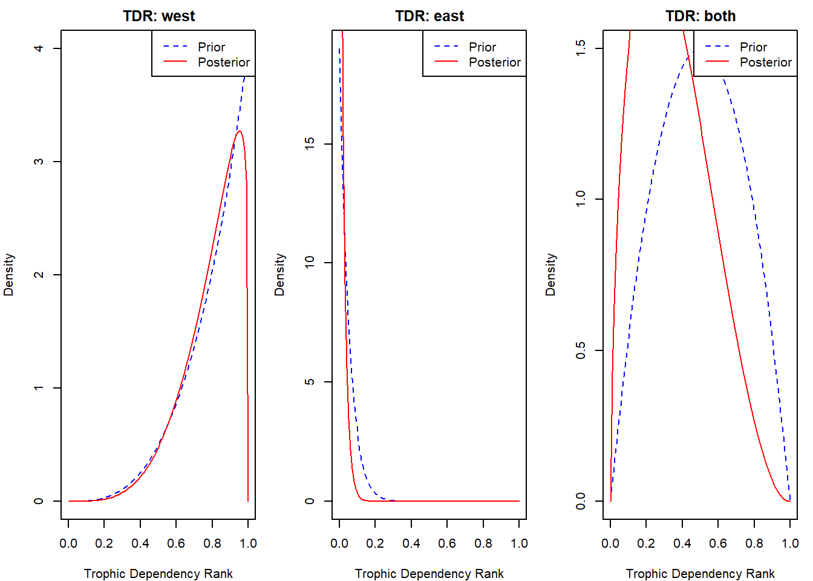
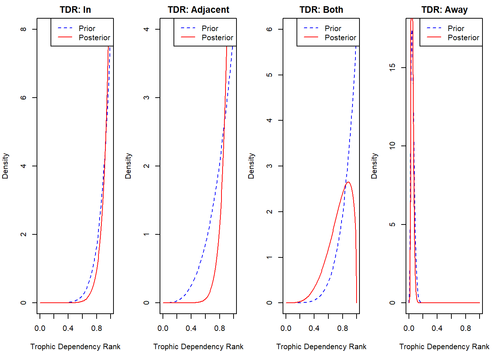
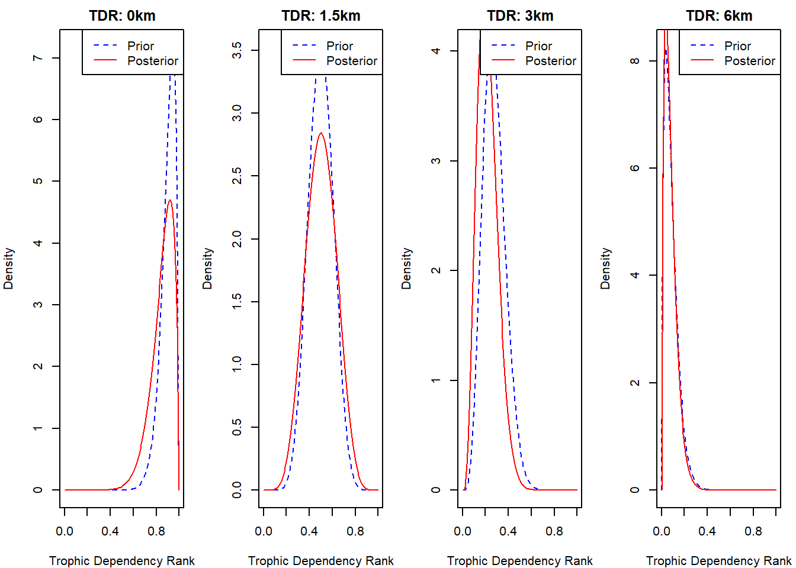
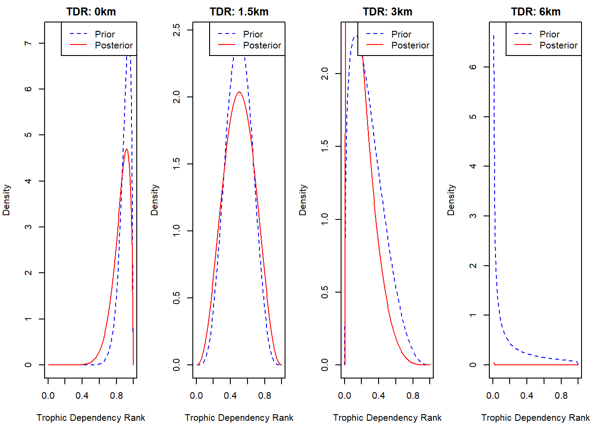
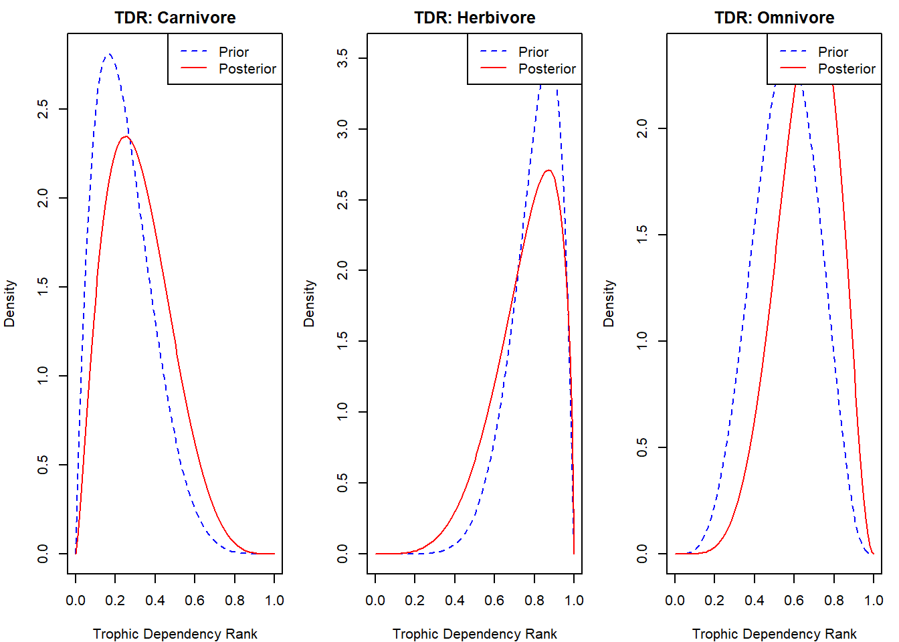

Kelp Forest Dependence of South African Fish Species
Author
AJ Smit, Zoë-Angelique Petersen & David Dyer
Likelihood function
A function will be built using the confidence and detail scores that will be combined with the prior distributions, to form informative posterior distributions. For now, I will be doing both the likelihood and posterior distributions within a single section (view Posterior distribution).
Posterior distribution
In this section, the posterior distributions will be viewed separately for each prior. The intent is to determine if the posteriors reflect a distribution that is expected based on the relationships that occur between line-fish and kelp forests.
Using the priors that were determined in the last section, this section will encompass these and will be making use of STAN to compute individual posterior distributions. An intergrated model will be done once the priors and posteriors produce an expected outcome for the given catergories.
Prior 1: Geographic Distribution
The distribution of kelp forests, along with the availability of kelp as a food source vary between the west and east coasts (Ecklonia maxima at De Hoop) regions. Fish species that are distributed in different regions along the South African coast may display different TDRs, with line-fish along the west coast having a greater TDR to line-fish along the east coast.
# Load in libraries# install.packages("rstan")# install.packages("bayesplot")# install.packages("tidyverse")library(rstan)
Loading required package: StanHeaders
rstan version 2.32.7 (Stan version 2.32.2)
For execution on a local, multicore CPU with excess RAM we recommend calling
options(mc.cores = parallel::detectCores()).
To avoid recompilation of unchanged Stan programs, we recommend calling
rstan_options(auto_write = TRUE)
For within-chain threading using `reduce_sum()` or `map_rect()` Stan functions,
change `threads_per_chain` option:
rstan_options(threads_per_chain = 1)
Do not specify '-march=native' in 'LOCAL_CPPFLAGS' or a Makevars file
library(bayesplot)
This is bayesplot version 1.12.0
- Online documentation and vignettes at mc-stan.org/bayesplot
- bayesplot theme set to bayesplot::theme_default()
* Does _not_ affect other ggplot2 plots
* See ?bayesplot_theme_set for details on theme setting
── Conflicts ────────────────────────────────────────── tidyverse_conflicts() ──
✖ tidyr::extract() masks rstan::extract()
✖ dplyr::filter() masks stats::filter()
✖ dplyr::lag() masks stats::lag()
ℹ Use the conflicted package (<http://conflicted.r-lib.org/>) to force all conflicts to become errors
# Function to create likelihood based on knowledge specificitycreate_likelihood <-function(data, composite_scores) {# Normalize composite scores to weights weights <- composite_scores /max(composite_scores)# Create likelihood function# Assumes data is proportion of kelp dependency from different sources likelihood <-function(theta, data, weights) {# Weighted log-likelihood log_likelihood <-sum(weights *dbeta(data, theta[1], theta[2], log =TRUE))return(log_likelihood) }return(likelihood)}# Example prior parameters from the documentprior_params <-list(west =list(alpha =4, beta =1), # High TDR expectationeast =list(alpha =1, beta =19), # Low TDR expectationboth =list(alpha =2, beta =2) # Intermediate TDR)# Simulated data with knowledge specificity scoresset.seed(123)simulate_tdr_data <-function(region) { params <- prior_params[[region]]# Simulate multiple data sources n_sources <-5 data <-rbeta(n_sources, params$alpha, params$beta) composite_scores <-runif(n_sources, 0.5, 1)list(data = data, composite_scores = composite_scores)}# Bayesian updating functionbayesian_tdr_update <-function(region) {# Simulate data sim_data <-simulate_tdr_data(region)# Create likelihood function likelihood_func <-create_likelihood(sim_data$data, sim_data$composite_scores)# Prior parameters prior <- prior_params[[region]]# Optimize to find posterior parameters opt_result <-optim(par =c(prior$alpha, prior$beta),fn =function(theta) -likelihood_func(theta, sim_data$data, sim_data$composite_scores),method ="Nelder-Mead" )# Posterior parameters posterior_alpha <- opt_result$par[1] posterior_beta <- opt_result$par[2]list(prior = prior,posterior =list(alpha = posterior_alpha, beta = posterior_beta),data = sim_data$data )}# Analyze TDR for different regionsregions <-c("west", "east", "both")results <-lapply(regions, bayesian_tdr_update)
Warning in dbeta(data, theta[1], theta[2], log = TRUE): NaNs produced
# Plotting functionplot_tdr_posteriors <-function(results) {par(mfrow =c(1, length(results)), mar =c(4, 4, 2, 1))for (i inseq_along(results)) { result <- results[[i]] region <- regions[i]# Prior distributioncurve(dbeta(x, result$prior$alpha, result$prior$beta),from =0, to =1,col ="blue",lty =2,main =paste("TDR:", region),ylab ="Density",xlab ="Trophic Dependency Rank" )# Posterior distributioncurve(dbeta(x, result$posterior$alpha, result$posterior$beta),from =0, to =1,col ="red",add =TRUE )legend("topright",legend =c("Prior", "Posterior"),col =c("blue", "red"),lty =c(2, 1) ) }}# Generate plotplot_tdr_posteriors(results)

Prior 2: Habitat
In this question you are asked to select the answer that best describes the habitat of the fish species in relation to kelp forests. Answering ‘In’, ‘Adjacent’, or ‘Both’ pertains to instances when you answered ‘West’ in Question 1. Answering ‘Away’ applies only to when you answered ‘East’ in Question 1.
# Function to create likelihood based on knowledge specificitycreate_likelihood <-function(data, composite_scores) {# Normalize composite scores to weights weights <- composite_scores /max(composite_scores)# Create likelihood function# Assumes data is proportion of kelp dependency from different sources likelihood <-function(theta, data, weights) {# Weighted log-likelihood log_likelihood <-sum(weights *dbeta(data, theta[1], theta[2], log =TRUE))return(log_likelihood) }return(likelihood)}# Example prior parameters from the documentprior_params <-list(In =list(alpha =8, beta =1), # High TDR expectationAdjacent =list(alpha =4, beta =1), # Low-Intermediate TDRBoth =list(alpha =6, beta =1), # Intermediate TDRAway =list(alpha =5, beta =85) # Low TDR)# Simulated data with knowledge specificity scoresset.seed(123)simulate_tdr_data <-function(region) { params <- prior_params[[region]]# Simulate multiple data sources n_sources <-5 data <-rbeta(n_sources, params$alpha, params$beta) composite_scores <-runif(n_sources, 0.5, 1)list(data = data, composite_scores = composite_scores)}# Bayesian updating functionbayesian_tdr_update <-function(region) {# Simulate data sim_data <-simulate_tdr_data(region)# Create likelihood function likelihood_func <-create_likelihood(sim_data$data, sim_data$composite_scores)# Prior parameters prior <- prior_params[[region]]# Optimize to find posterior parameters opt_result <-optim(par =c(prior$alpha, prior$beta),fn =function(theta) -likelihood_func(theta, sim_data$data, sim_data$composite_scores),method ="Nelder-Mead" )# Posterior parameters posterior_alpha <- opt_result$par[1] posterior_beta <- opt_result$par[2]list(prior = prior,posterior =list(alpha = posterior_alpha, beta = posterior_beta),data = sim_data$data )}# Analyze TDR for different regionsregions <-c("In", "Adjacent", "Both", "Away")results <-lapply(regions, bayesian_tdr_update)
Warning in dbeta(data, theta[1], theta[2], log = TRUE): NaNs produced
# Plotting functionplot_tdr_posteriors <-function(results) {par(mfrow =c(1, length(results)), mar =c(4, 4, 2, 1))for (i inseq_along(results)) { result <- results[[i]] region <- regions[i]# Prior distributioncurve(dbeta(x, result$prior$alpha, result$prior$beta),from =0, to =1,col ="blue",lty =2,main =paste("TDR:", region),ylab ="Density",xlab ="Trophic Dependency Rank" )# Posterior distributioncurve(dbeta(x, result$posterior$alpha, result$posterior$beta),from =0, to =1,col ="red",add =TRUE )legend("topright",legend =c("Prior", "Posterior"),col =c("blue", "red"),lty =c(2, 1) ) }}# Generate plotplot_tdr_posteriors(results)

Prior 3: Depth
This is something
Prior 4: Distance from shore
The priors for the distance from the shore effect on TDR will have to reflect the fact that species that occur closer to the shore are more likely to have a higher TDR on kelp, and as we move further offshore, the TDR on kelp is expected to decrease. The priors for this question are as follows:
Option 1:
# Function to create likelihood based on knowledge specificitycreate_likelihood <-function(data, composite_scores) {# Normalize composite scores to weights weights <- composite_scores /max(composite_scores)# Create likelihood function# Assumes data is proportion of kelp dependency from different sources likelihood <-function(theta, data, weights) {# Weighted log-likelihood log_likelihood <-sum(weights *dbeta(data, theta[1], theta[2], log =TRUE))return(log_likelihood) }return(likelihood)}# Example prior parameters from the documentprior_params <-list("0km"=list(alpha =18, beta =2), # High TDR expectation"1.5km"=list(alpha =10, beta =10), # Low-Intermediate TDR"3km"=list(alpha =5.54, beta =14.46), # Intermediate TDR"6km"=list(alpha =1.70, beta =18.30) # Low TDR)# Simulated data with knowledge specificity scoresset.seed(123)simulate_tdr_data <-function(region) { params <- prior_params[[region]]# Simulate multiple data sources n_sources <-5 data <-rbeta(n_sources, params$alpha, params$beta) composite_scores <-runif(n_sources, 0.5, 1)list(data = data, composite_scores = composite_scores)}# Bayesian updating functionbayesian_tdr_update <-function(region) {# Simulate data sim_data <-simulate_tdr_data(region)# Create likelihood function likelihood_func <-create_likelihood(sim_data$data, sim_data$composite_scores)# Prior parameters prior <- prior_params[[region]]# Optimize to find posterior parameters opt_result <-optim(par =c(prior$alpha, prior$beta),fn =function(theta) -likelihood_func(theta, sim_data$data, sim_data$composite_scores),method ="Nelder-Mead" )# Posterior parameters posterior_alpha <- opt_result$par[1] posterior_beta <- opt_result$par[2]list(prior = prior,posterior =list(alpha = posterior_alpha, beta = posterior_beta),data = sim_data$data )}# Analyze TDR for different regionsregions <-c("0km", "1.5km", "3km", "6km")results <-lapply(regions, bayesian_tdr_update)
Warning in dbeta(data, theta[1], theta[2], log = TRUE): NaNs produced
# Plotting functionplot_tdr_posteriors <-function(results) {par(mfrow =c(1, length(results)), mar =c(4, 4, 2, 1))for (i inseq_along(results)) { result <- results[[i]] region <- regions[i]# Prior distributioncurve(dbeta(x, result$prior$alpha, result$prior$beta),from =0, to =1,col ="blue",lty =2,main =paste("TDR:", region),ylab ="Density",xlab ="Trophic Dependency Rank" )# Posterior distributioncurve(dbeta(x, result$posterior$alpha, result$posterior$beta),from =0, to =1,col ="red",add =TRUE )legend("topright",legend =c("Prior", "Posterior"),col =c("blue", "red"),lty =c(2, 1) ) }}# Generate plotplot_tdr_posteriors(results)

Option 2:
# Function to create likelihood based on knowledge specificitycreate_likelihood <-function(data, composite_scores) {# Normalize composite scores to weights weights <- composite_scores /max(composite_scores)# Create likelihood function# Assumes data is proportion of kelp dependency from different sources likelihood <-function(theta, data, weights) {# Weighted log-likelihood log_likelihood <-sum(weights *dbeta(data, theta[1], theta[2], log =TRUE))return(log_likelihood) }return(likelihood)}# Example prior parameters from the documentprior_params <-list("0km"=list(alpha =18, beta =2), # High TDR expectation"1.5km"=list(alpha =5, beta =5), # Low-Intermediate TDR"3km"=list(alpha =1.385, beta =3.615), # Intermediate TDR"6km"=list(alpha =0.106, beta =1.144) # Low TDR)# Simulated data with knowledge specificity scoresset.seed(123)simulate_tdr_data <-function(region) { params <- prior_params[[region]]# Simulate multiple data sources n_sources <-5 data <-rbeta(n_sources, params$alpha, params$beta) composite_scores <-runif(n_sources, 0.5, 1)list(data = data, composite_scores = composite_scores)}# Bayesian updating functionbayesian_tdr_update <-function(region) {# Simulate data sim_data <-simulate_tdr_data(region)# Create likelihood function likelihood_func <-create_likelihood(sim_data$data, sim_data$composite_scores)# Prior parameters prior <- prior_params[[region]]# Optimize to find posterior parameters opt_result <-optim(par =c(prior$alpha, prior$beta),fn =function(theta) -likelihood_func(theta, sim_data$data, sim_data$composite_scores),method ="Nelder-Mead" )# Posterior parameters posterior_alpha <- opt_result$par[1] posterior_beta <- opt_result$par[2]list(prior = prior,posterior =list(alpha = posterior_alpha, beta = posterior_beta),data = sim_data$data )}# Analyze TDR for different regionsregions <-c("0km", "1.5km", "3km", "6km")results <-lapply(regions, bayesian_tdr_update)
Warning in dbeta(data, theta[1], theta[2], log = TRUE): NaNs produced
# Plotting functionplot_tdr_posteriors <-function(results) {par(mfrow =c(1, length(results)), mar =c(4, 4, 2, 1))for (i inseq_along(results)) { result <- results[[i]] region <- regions[i]# Prior distributioncurve(dbeta(x, result$prior$alpha, result$prior$beta),from =0, to =1,col ="blue",lty =2,main =paste("TDR:", region),ylab ="Density",xlab ="Trophic Dependency Rank" )# Posterior distributioncurve(dbeta(x, result$posterior$alpha, result$posterior$beta),from =0, to =1,col ="red",add =TRUE )legend("topright",legend =c("Prior", "Posterior"),col =c("blue", "red"),lty =c(2, 1) ) }}# Generate plotplot_tdr_posteriors(results)

Prior 5: Trophic mode
# Function to create likelihood based on knowledge specificitycreate_likelihood <-function(data, composite_scores) {# Normalize composite scores to weights weights <- composite_scores /max(composite_scores)# Create likelihood function# Assumes data is proportion of kelp dependency from different sources likelihood <-function(theta, data, weights) {# Weighted log-likelihood log_likelihood <-sum(weights *dbeta(data, theta[1], theta[2], log =TRUE))return(log_likelihood) }return(likelihood)}# Example prior parameters from the documentprior_params <-list(Herbivore =list(alpha =8, beta =2), # High TDR expectationOmnivore =list(alpha =5, beta =4), # Low-Intermediate TDRCarnivore =list(alpha =2, beta =6) # Intermediate TDR)# Simulated data with knowledge specificity scoresset.seed(123)simulate_tdr_data <-function(region) { params <- prior_params[[region]]# Simulate multiple data sources n_sources <-5 data <-rbeta(n_sources, params$alpha, params$beta) composite_scores <-runif(n_sources, 0.5, 1)list(data = data, composite_scores = composite_scores)}# Bayesian updating functionbayesian_tdr_update <-function(region) {# Simulate data sim_data <-simulate_tdr_data(region)# Create likelihood function likelihood_func <-create_likelihood(sim_data$data, sim_data$composite_scores)# Prior parameters prior <- prior_params[[region]]# Optimize to find posterior parameters opt_result <-optim(par =c(prior$alpha, prior$beta),fn =function(theta) -likelihood_func(theta, sim_data$data, sim_data$composite_scores),method ="Nelder-Mead" )# Posterior parameters posterior_alpha <- opt_result$par[1] posterior_beta <- opt_result$par[2]list(prior = prior,posterior =list(alpha = posterior_alpha, beta = posterior_beta),data = sim_data$data )}# Analyze TDR for different regionsregions <-c("Carnivore", "Herbivore", "Omnivore")results <-lapply(regions, bayesian_tdr_update)# Plotting functionplot_tdr_posteriors <-function(results) {par(mfrow =c(1, length(results)), mar =c(4, 4, 2, 1))for (i inseq_along(results)) { result <- results[[i]] region <- regions[i]# Prior distributioncurve(dbeta(x, result$prior$alpha, result$prior$beta),from =0, to =1,col ="blue",lty =2,main =paste("TDR:", region),ylab ="Density",xlab ="Trophic Dependency Rank" )# Posterior distributioncurve(dbeta(x, result$posterior$alpha, result$posterior$beta),from =0, to =1,col ="red",add =TRUE )legend("topright",legend =c("Prior", "Posterior"),col =c("blue", "red"),lty =c(2, 1) ) }}# Generate plotplot_tdr_posteriors(results)

Prior 6: Proportion of kelp/kelp associated organisms consumed
The proportion of stomachs that kelp or kelp associated organisms were found in can indicate the degree at which species rely on those particular food types. Species with a greater proportion of food items that are kelp/associated to kelp are more likely to have a higher TDR on kelp, while as the proportion of food items consumed decreases, the TDR on kelp is expected to decrease.
# Function to create likelihood based on knowledge specificitycreate_likelihood <-function(data, composite_scores) {# Normalize composite scores to weights weights <- composite_scores /max(composite_scores)# Create likelihood function# Assumes data is proportion of kelp dependency from different sources likelihood <-function(theta, data, weights) {# Weighted log-likelihood log_likelihood <-sum(weights *dbeta(data, theta[1], theta[2], log =TRUE))return(log_likelihood) }return(likelihood)}# Example prior parameters from the documentprior_params <-list(None =list(alpha =1, beta =19), Low_proportion =list(alpha =4, beta =10), Moderate_proportion =list(alpha =5, beta =5),High_proportion =list(alpha =15, beta =5),Greatest_proportion =list(alpha =19, beta =1))# Simulated data with knowledge specificity scoresset.seed(123)simulate_tdr_data <-function(region) { params <- prior_params[[region]]# Simulate multiple data sources n_sources <-5 data <-rbeta(n_sources, params$alpha, params$beta) composite_scores <-runif(n_sources, 0.5, 1)list(data = data, composite_scores = composite_scores)}# Bayesian updating functionbayesian_tdr_update <-function(region) {# Simulate data sim_data <-simulate_tdr_data(region)# Create likelihood function likelihood_func <-create_likelihood(sim_data$data, sim_data$composite_scores)# Prior parameters prior <- prior_params[[region]]# Optimize to find posterior parameters opt_result <-optim(par =c(prior$alpha, prior$beta),fn =function(theta) -likelihood_func(theta, sim_data$data, sim_data$composite_scores),method ="Nelder-Mead" )# Posterior parameters posterior_alpha <- opt_result$par[1] posterior_beta <- opt_result$par[2]list(prior = prior,posterior =list(alpha = posterior_alpha, beta = posterior_beta),data = sim_data$data )}# Analyze TDR for different regionsregions <-c("None", "Low_proportion", "Moderate_proportion", "High_proportion","Greatest_proportion")results <-lapply(regions, bayesian_tdr_update)
Warning in dbeta(data, theta[1], theta[2], log = TRUE): NaNs produced
Warning in dbeta(data, theta[1], theta[2], log = TRUE): NaNs produced
# Plotting functionplot_tdr_posteriors <-function(results) {par(mfrow =c(1, length(results)), mar =c(4, 4, 2, 1))for (i inseq_along(results)) { result <- results[[i]] region <- regions[i]# Prior distributioncurve(dbeta(x, result$prior$alpha, result$prior$beta),from =0, to =1,col ="blue",lty =2,main =paste("TDR:", region),ylab ="Density",xlab ="Trophic Dependency Rank" )# Posterior distributioncurve(dbeta(x, result$posterior$alpha, result$posterior$beta),from =0, to =1,col ="red",add =TRUE )legend("topright",legend =c("Prior", "Posterior"),col =c("blue", "red"),lty =c(2, 1) ) }}# Generate plotplot_tdr_posteriors(results)